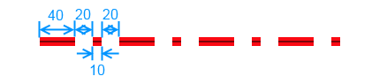
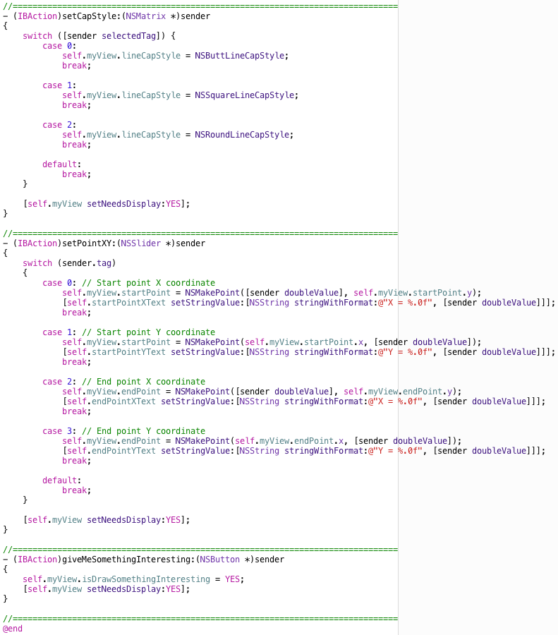

We can use "NSBezierPath" function to draw many different types of paths. Line is the simplest one. With Cocoa, we can control the attributes of a line in many ways. Here, I am going to show you how to control color, width, dash style, cap style, start point and end point. The final product will look similar to the following figure.
Let me first describe these attributes.
We set the line color with "[colorObj set]" method before we make a stroke, where colorObj is a NSColor object. In this tutorial, I will also draw a thin black line to indicate the center of the line, which is used to illustrate different cap styles.
We use "[pathObj setLineWidth:(CGFloat)lineWidth]" method to set the width of a line, where pathObj is a NSBezierPath object. One unit of length is 1/72 inch and the default width is 1 unit. In the following figure, I set the width to 20 unites by calling "[pathObj setLineWidth:20.0]".
The default dash style is solid. That is, no gap is in the line. We use a CGFloat array to define a dash pattern. The first element in the array is the length of the first line segment, the second is the length of the first gap, the third is the length of the second line segment, the fourth is the length of the second gap, and so on. If we have odd number of elements in the array, the last is ignored.
To use a dash pattern, we first define the CGFloat array. Next, we call
- (void)setLineDash:(const CGFloat *)pattern
count:(NSInteger)count
phase:(CGFloat)phase
, where "pattern" is a C-style array containing segment lengths, "count" is the number of elements in the array, and "phase" is the offset (length unit) at which to start drawing the pattern. The "phase" might need some examples to understand. Let's say that if the pattern array is {20, 20} and the phase is 10, the line will start at the middle of the line segment. If we set the phase 23, the line will start 3 units after the start of the gap. Thus, the first 17 unites of the line would be the gap. Let's see some examples.

We use "[pathObj setLineCapStyle:(NSLineCapStyle)lineCapStyle]" to set cap style. "lineCapStyle" could be "NSButtLineCapStyle", "NSSquareLineCapStyle", or "NSRoundLineCapStyle". The followings are examples.
We use "[pathObj moveToPoint:(NSPoint)aPoint]" to move the current point to the specified location without drawing a line. Next, we use "[pathObj lineToPoint:(NSPoint)aPoint]" to make a line from the previous point to the current point. Notice that these methods only move the current point and make line paths. The line is not drawn yet. We draw the line path by making strokes.
After setting all attributes and end points, we need to call "[pathObj stroke]" to draw the line path. Notice that you can change attributes many times. Only the most recent changes will be used to make the strokes.
Good! Now you understand how to control line attributes and end points. Let's create our NSView subclass, MyView, to draw the line. Following previouse tutorials to create default "MyView.h" and "MyView.m". In "MyView.h", let's add properties to control the appearance of the line. I also added a property to set a flag for drawing something more interesting. The following is the revised code.
In "MyView.m", we declared two private arrays, "dashSegmentCount" and "dashSegmentLength", for four dash patterns, which we are going to use in our drawing.
To initialize these two arrays, we defined "- (void)defineDashStyle" method.
In "- (void)initWithFrame:(NSRect)frame" method, we defined our dash styles and set "isDrawSomethingInteresting" to "NO".
Next, we implement "- (void)drawRect:(NSRect)viewRect", the drawing method of our MyView object. The following is the code. It should be clear to you.
OK. You might have wondered what the drawSomethingInteresting stuff is. Well, here it is. When the user clicks "Give me something interesting!" button, MyView draws three line paths. Each has ten segments with random attributes and end points. The following is the code.
Well, you might be excited after typing all the code and click the "Run" button. Oops, nothing is in the window. That's because we haven't set outlets and action/target pairs. We will do that in the next section.
Let's create the UI. Select "MainMenu.xib" in the project navigator. Create the UI by dragging-and-dropping objects from the object library. MyView is created from "Custom View" (NSView). Change Class to MyView. In addition, we used Box (NSBox), Color Well (NSColorWell), Label (NSTextField), Horizontal Slider (NSSlider), Radio Group (NSMetrix), and Push Button (NSButton).
To change the default color of the color well, select the object, show the attributes inspector, then select the color in the Color pull down list.
To adjust the bounds and the default value of a slider, select the object, show the attributes inpsector, change minimum value, maximum value, and the current value. In addition, check "Control > State > Continuous" so we can adjust the value and see the result immediately. Otherwise, the slider will not trigger events until you release the mouse.
To adjust the number of items in a radio group, select the object, show the attributes inspector, change "Metrix > Cells > Row and Column".
There are two ways to change titles. You can double-click the title and change it there. You can also show the attributes inspector and change the title field. The final UI should look similar to the following.
Our application needs outlets pointing to UI controls when we need to set their properties or get their information programmatically. To set an oulet to an UI control, select "MainMenu.xib" in the project navigator and show the assistant editor. Make sure "AppDelegate.h" is displayed in the assistant editor. Drag-and-drop controls from XIB editor to the space between "@interface AppDelegate : NSObject <NSApplicationDelegate>" and "@end", similar to steps mentioned in previous tutorials.
We create an outlet to myView so we can ask it to change line attributes and draw it. The oulet to lineColorWell is to set the default line color when the application starts. You can see six NSTextField object and NSSlider pairs. Those NSTextField objects are for displaying current values of the corresponding NSSlider objects. The outlets to NSSlider objects are to get the default values for the NSTextField objects. The code in "AppDelegate.h" related to AppDelegate should look similar to the following.
We will create seven IBAction functions. A function will be invoked when we change the line color, line width, dash style, dash phase, cap style, end points, or when we click the "Give me something interesting!" button. Notice that all sliders for controling end points invoke "setPointXY" function. The function identifies the sender by checking its tag. The following is the final interface for AppDelegate in "AppDelegate.h".
The implementation for these IBAction functions are straight forward. In addition to them, we also implement "applicationDidFinishLaunching" to initialize line attributes. The following is the colde in AppDelegate.m.

Let's run the program. Not bad. If you click the "Give me something interesting!" button, you might see something interesting. :)

Here is the zipped final project - BasicNSBezierPathLine.zip